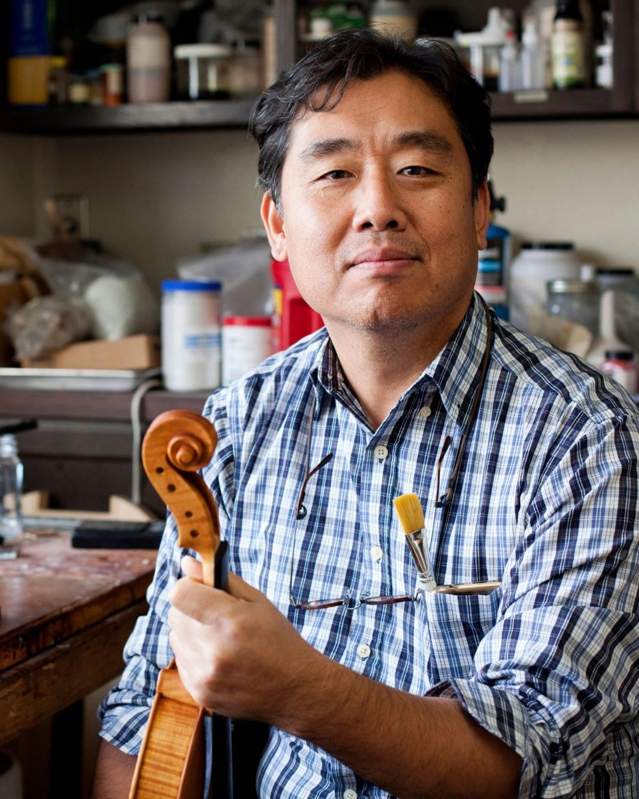

사진 — Violin Making School of America 제공
악기 제작
이상훈 Sanghoon Lee
이상훈은 1972년 피터 폴 프라이어가 설립한 솔트레이크시티의 바이올린 제작 학교 Violin Making School of America의 소유주이자 교장, 수석 교수다. 2004년 이 학교를 졸업한 뒤 Peter Prier & Sons Violins에서 복원 작업을 했고, 2009년부터 VMSA에서 바니시, 셋업, 미술 과목을 가르쳤다. 2010년 미국 바이올린 협회(VSA) 콩쿠르에서 바이올린 음향 부문 은메달을 받았다. 2023년 11월, 1991년부터 수석 교수를 맡아 온 찰스 울프의 뒤를 이어 학교를 이끄는 첫 한국인이 되었다. 교육과 함께 자신의 이름으로 바이올린을 계속 만들고 있다.
딜러
확인 중